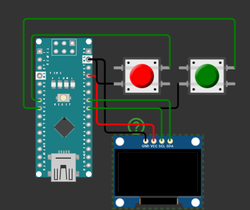
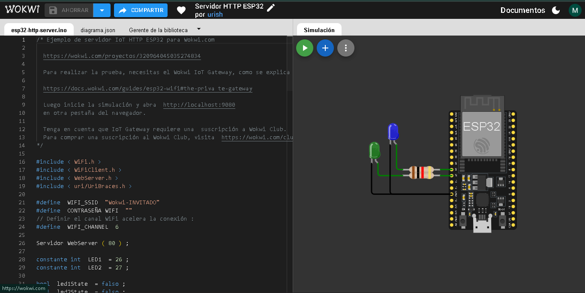
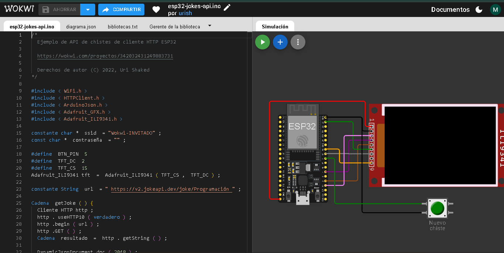

Simulación en línea de Arduino, ESP32 y otros microcontroladores con Wokwi.
Qué se hace aquí
Montaje virtual de circuitos.

El funcionamiento este proyecto fue ser un arcade portatil con 6 juegos 2D sencillos como:
Cach the dog
Snake
pin pong
Dinosaur Game
flappy birt
Galaga
Programación y prueba de código.

Este proyecto fue para iniciar Wokwi y saberlo usar. El proyecto es prender el Led azul durante 2 segundos y despues prende el Led verde durante el mismo tiempo.
Maquina de chistes.

El proyecto funciona prendiendo la pantalla Oled y conectandose al Wifi de donde saca los chistes y los presenta el la pantalla, despues el usuario presiona el boton para cambiar el chiste.